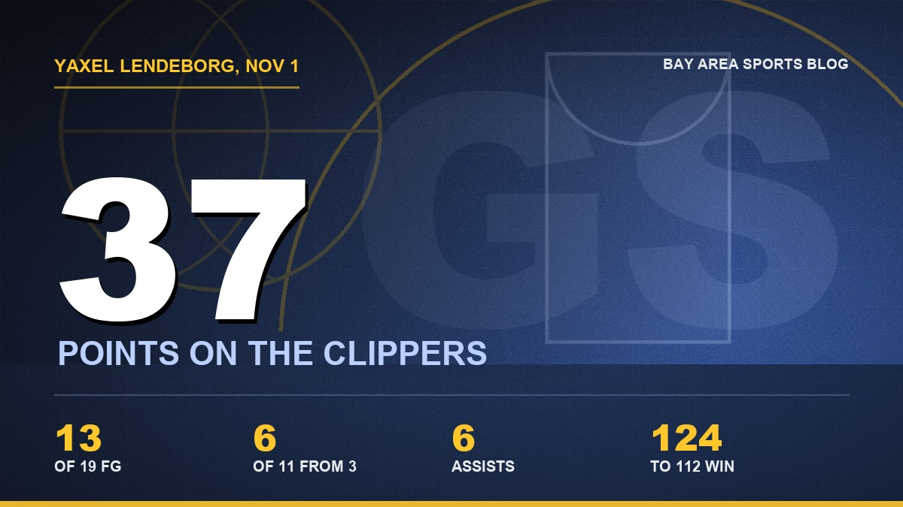
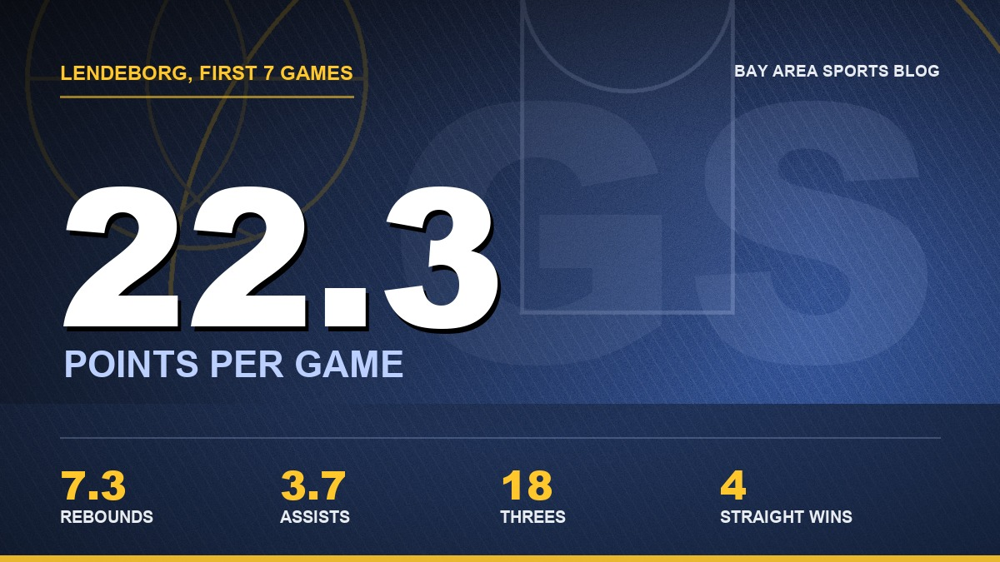

Yaxel Lendeborg Is the Truth, and Steph Knows It
No Steph. No Draymond. Thirty seven points from a rookie, a fourth straight win, and the first time in a long time I've looked at this team and thought about May.

I'll be honest with you. When I saw Steph and Draymond weren't playing Sunday night, I almost didn't put it on. Front end of a back to back, the Clippers in town, a lineup with Charles Bassey starting at center. I figured I'd catch the score later and go to bed mad.
My kid talked me into it. Said he wanted to watch "the Michigan guy." Fine.
Two hours later I was standing in the living room yelling at a 24 year old rookie to shoot it, and he kept shooting it, and it kept going in. Yaxel Lendeborg put 37 on the Clippers at Chase Center. Thirteen of 19 from the floor. Six of 11 from three. Five of 6 at the line, six assists, 34 minutes, and the Warriors won 124 to 112 without the two guys who've carried this franchise for over a decade.
The last Warriors rookie to score that many in a game? Steph. Forty two, back in 2010. That's the company.

Friday night made Sunday better
You have to remember where he was two days earlier. Friday against the Lakers, he was a mess. Six points, five turnovers, fouled out in 24 minutes, and Steph had to drag us back with 31 and eight threes. I went to bed thinking, okay, the rookie wall's real, here it comes.
Nope. He came back 48 hours later and scored 37.
That's what gets me more than the number. Rookies don't usually do that. They have a bad night and it follows them around for a week, they start passing up shots, they look at the bench after every mistake. This kid had his worst game as a pro and answered it with his best one. Steve Kerr said after the Denver game that at all the critical moments they just put the ball in his hands. I thought that was a coach being nice to a rookie. It wasn't. He meant it.
He's the truth
I've been careful with this guy. I wrote that he was the only reason I was smiling at 0 and 3. Then I went out on a limb after five games and called him my Rookie of the Year. I kept telling myself to slow down.
I'm done slowing down.
Seven games in he's averaging 22.3 points, 7.3 rebounds and 3.7 assists. He's hit 18 threes. He put 31 and 12 on Denver in their building, 26 and 9 in Minnesota, 18 and 13 on Memphis, and now 37 with no Steph on the floor to draw the defense away from him. The Clippers knew he was the guy. They had all night to take him away. They couldn't.

And he isn't doing it with one trick. He posts up smaller guys. He shoots it off the catch. He grabs a rebound and goes, and at 6 foot 9 there's not much anybody can do when he gets a head of steam. He's got that thing where he's never in a hurry, which you just can't teach. I've watched a lot of Warriors rookies over the years try to play fast because they're nervous. He plays slow because he's not.
My kid's already asking for the jersey. I haven't said no yet.
Steph knows what this means
After the Denver game, Steph called him "kind of the full package." He talked about his composure, how the kid had just come off an NCAA championship run and played like it. Steph doesn't hand that stuff out. He's been around too long and seen too many young guys come and go.
I'll tell you what I think is going on in his head. I'm only guessing, but I've watched this man for seventeen years. He's 38. A month ago the whole conversation around this team was about 2027 cap space and whether Steph's last good years were going to get wasted on a roster that couldn't win. I wrote some of those columns. I was angry. I meant every word.
Now look. Steph dropped 44 in Minnesota with the rookie putting up 26 next to him. He went for 31 against the Lakers. And on a night he got to sit and rest his legs, the kid carried the whole thing. You know how long it's been since Steph could take a night off and trust the team would be fine without him?
I think he knows he's got a real shot now. Not a someday shot. A this year shot.
A guy that age doesn't get many more swings, and he just found out the front office accidentally handed him the best young partner he's had since Klay was a kid.
Four straight and Phoenix next
We started this thing 0 and 3. Lakers blew us out on opening night, Memphis got us at home, Phoenix outscored us out in the desert. I'll admit it, I was writing this season off. Now it's four in a row and 4 and 3, and the rookie is the reason for most of it.
Phoenix comes to Chase on Monday night, second half of the back to back, and Steph should be fresh. They beat us the first time. I want that one back.
I keep coming back to Friday night, by the way. Six points and fouled out. If you'd told me then that I'd be writing this two days later, I'd have laughed at you.
I'm not laughing. I'm looking at May on the calendar like a fool. Don't tell my wife.
My first take on the rookie is in the 0 and 3 column, and the Rookie of the Year case is right here. Steph's night against the Lakers is in this one. The full season lives on the schedule hub and the depth chart, and everything else is on the Warriors hub.
More coverage: Warriors · NBA · Bay Area Sports Blog home